桃園治水願景
市長給市民的期許
2018年 市府新聞：鄭市長提及，桃園屬於台地地形，應發展成為智慧治水示範區，市府提出許多治水方案，將埔心溪及南崁溪防洪等級提高至100年，也興建各區核心治水工程，完工後，將可避免淹水災害；亦將無灌溉功能的埤塘轉型成為埤塘公園、滯洪池或是生態公園，讓分流、滯洪的效果更好，打造防救災型「海綿城市」。水務局長對治水的承諾
水務局長劉振宇表示，水務局自101年起，開始成立水患自主防災社區，包含社區宣導說明、教育訓練、社區觀摩與防汛演練，持續努力至106年榮獲全國績優縣市及獲得3處特優社區。107年度除了配合水利署政策，推動企業協助防災與全民溝渠清淤總動員，並推動多角度的創新作為，如推動防災外交、建制災前、災中同流域防災社區區域聯合防汛、全台灣第一座民間版的滯洪池等，發揮社區志工、企業、智慧科技及政府（中央與地方）四大聯合防汛實際成果。水務局對雨水下水道 實施方向規劃：
- 提升雨水下水道保護標準：規定雨水流出抑制設施，以間接將桃園市之雨水下水道保護標準提升至20年重現期，降低都市淹水風險。
- 利用IoT智慧管理：利用科技發展，持續於雨水下水道系統設置監測站，透過大數據分析，掌握排水狀況可供預警及救災決策使用，另掌握淤積狀況可以降低維護管理人力及經費。
- 雨水下水道與滯洪池-LID的整合，減少淹水情形。
- 土地開發與建物的出流抑制，讓不透水部分能吸納一定量體的洪鋒。
- 雲端廠務管理系統(MIS)將成為全國首創整合管理，真正做到數據收集及水廠的監控，並制定出未來污水廠的管理監控規範。
- 下水道水量及水位數據的監測，可提供後續系統的雨污混流做判斷、排水區模式參數的修正，讓模式模擬上更精確
A7 & A8 雨水下水道規劃
住戶或買屋前是否應該對社區的排水規劃先有所了解。A8 區域現有雨水排水道：你可經由這個連接查詢詳細資料 雨水下水道查詢
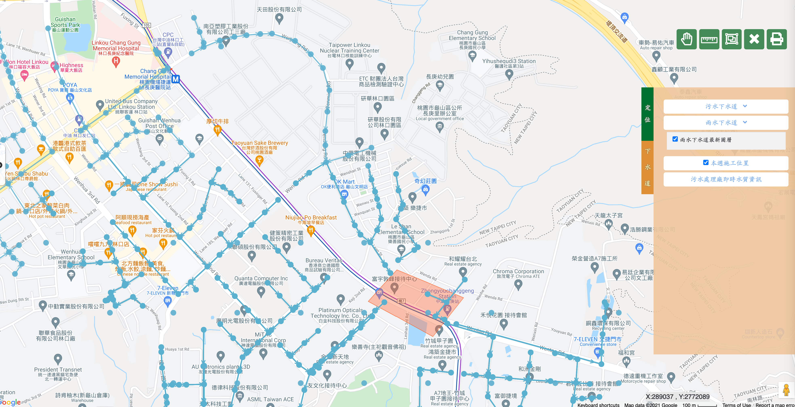
A7 區域現有雨水排水道：雨水下水道查詢
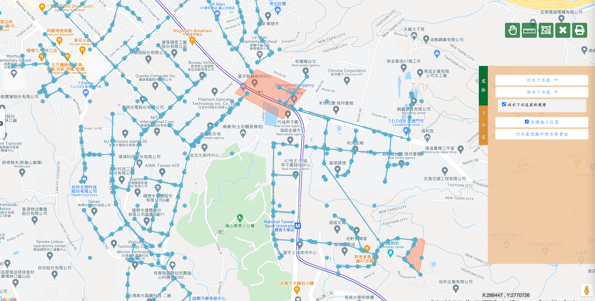
治水/防汛資訊網站
- 內政部營建署 整合治水
- 經濟部水利署 防災資訊服務
- 國家災害防救科技中心 災害潛勢地圖網站
- 桃園市政府 水務局
- 便民服務 溝渠清疏申請
- 國家治理學院 李鴻源：台灣必須面對的真相
- 市府新聞 2008/06/26 社區智慧聯防
- 台灣好新聞 2019/04/11 落實全民自主防汛 桃市水務局舉辦溝渠清淤總動員
- 桃園市水務局 桃園市政府下水道進步與展望
- 國家災害防救科技中心 哪裡容易淹水, 淹水潛勢圖
- 政府資料開放平台 淹水潛勢圖
- 經濟部水利署 淹水潛勢及水災風險地圖
桃園市實際治水進度管控
桃園市雨水下水道建設進度：除了 106年度因改制直轄市時, 雨水下水道建設較快之外，目前每年進度平均 只有1.38%。以此成長速度, 如要達到台北市相同水平需要15年以後。
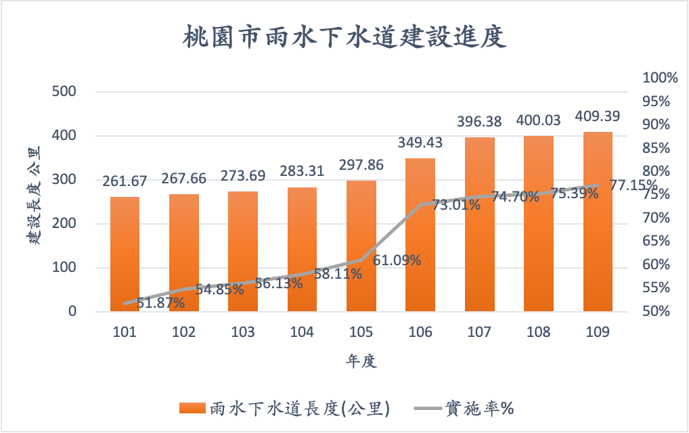
依據109年資料，桃園市在 雨水下水道實施長度（公里）數及實施比率上, 在六都幾乎都是墊底。有待積極強化。
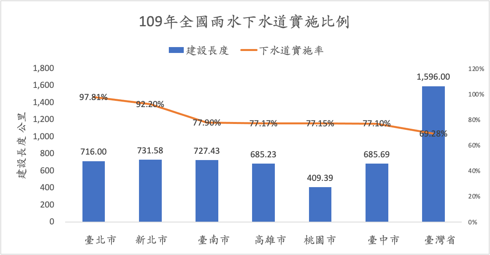
防洪基本知識
- 內政部營建署 雨水下水道系統規劃原則檢討
- 桃園市下水道雲端智慧 桃園市雨水流出抑制設施 設計參考手冊
- 水利、水土保持技師 雨水下水道與河川重現期距差異之研究
- 大雨特報：24小時累積雨量超過50毫米以上(重現期距 < 1.5年)
- 豪雨特報：24小時累積雨量超過130毫米以上(重現期距＝1.5年)
- 大豪雨特報：24小時累積雨量超過200毫米以上(重現期距=3.5年)
- 超大豪雨特報：24小時累積雨量超過350毫米以上(重現期距=15年)
重現期距
國外雨水下水道之保護標準（又稱重現期距或頻率年）多在10年一次之內，而國內雨水下水道之保護標準則分為１年一次、２年一次、３年一次、５年一次，主要係依據該都市的發展計畫、人口密度、重要程度等等因素之考量而有所不同。防洪頻率 儘管若干地區雨水下水道保護標準逐漸被提高，但目前最高標準僅為５年一次重現期距，較之河川保護標準仍舊差上一大截，以台北市為例，雨水下水道保護標準為五年一次，而流經台北市境內之新店 溪碧潭橋以下（碧潭橋以上為100年一次重現期距）、景美溪、基隆河等為200年一次重現期距，雨水下水道與河川兩者之間不僅保護標準不一，且差距頗大。
外界傳的部分縣市排水防洪頻率可以到50年或100年，指的是類似台北二重疏洪道等郊區的大排水系統，各都市排水溝大多只是5至10年的防洪頻率排水量。 高雄市區下水道排洪設計標準，則是根據5年一次防洪頻率，亦即每小時雨量上限79毫米。
桃園水情資訊
水情相關網站
防汛相關資訊- 天氣預報：中央氣象局 一週氣象預報, 雨量預報
- 雨量圖：區域雨量圖
- 地區雨量：中央氣象局 雨量 - 十分鐘資料, 雨量 - 整點小時資料, 雨量 - 各縣市最大值
- 桃園市水情資訊網 水情 - 雨量站
- 淹水監測：經濟部水利署 防災資訊服務網 淹水即時感測
- 水情看桃園: 手機APP下載 Android App, iOS App
- 用數據看台灣 台灣即時雨量資訊
淹水時應該紀錄哪些資訊
當淹水時應該紀錄下面資訊, 作為有效評估 雨水排放系統效能的依據。依據 2021/08/10日 龜山區的資料做範例。雨量紀錄: 中央氣象局的雨量紀錄 - 龜山 應該是指體育大學觀測站的數據。對A8 區域的淹水 關聯性不大，所以需要使用 桃園市設在文欣國小的雨量觀測點資料與A8 淹水才會有直接關連。
中央氣象局：十分鐘 雨量資料
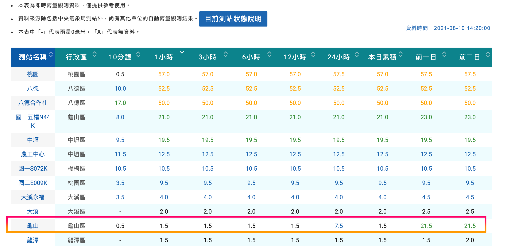
中央氣象局： 整點小時 雨量資料
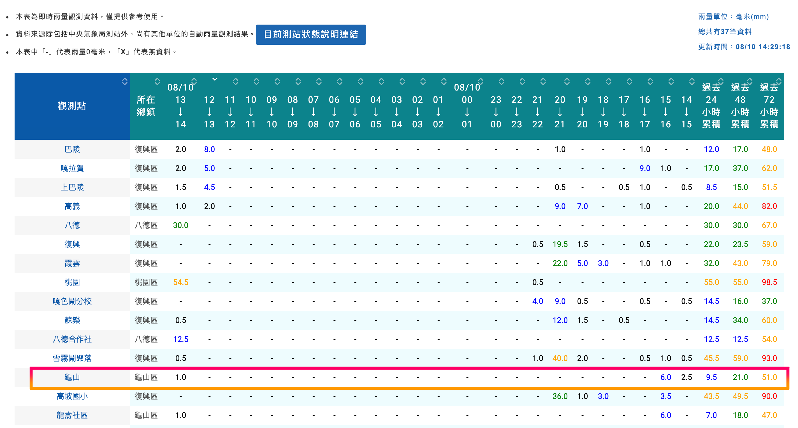
桃園市 水情看桃園 雨量資料
龜山區雨量 觀測點包含： 文欣國小 （最接近A8站的雨量觀測站）, 國一五楊： 國道一號北上44K, 龜山： 體育大學, 龍壽社區。觀查雨量是否超過 40.53 mm/hr, 目前排水規劃值。應該採用每小時降雨作為標準，避免使用 10分鐘的尖峰值。
如下圖顯示 2021/08/10 日 14:00 - 15:00 的每小時雨量 為 57.5 mm/hr, 已超過排水規劃的 40.53 mm/hr.
雨量組體圖
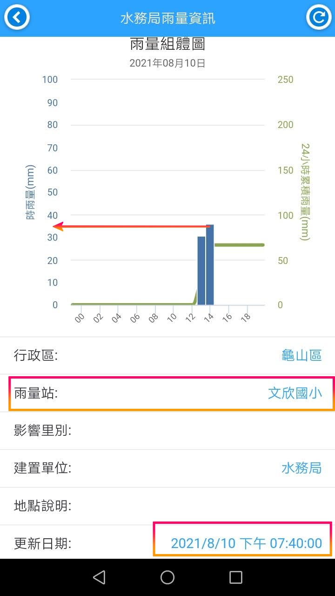
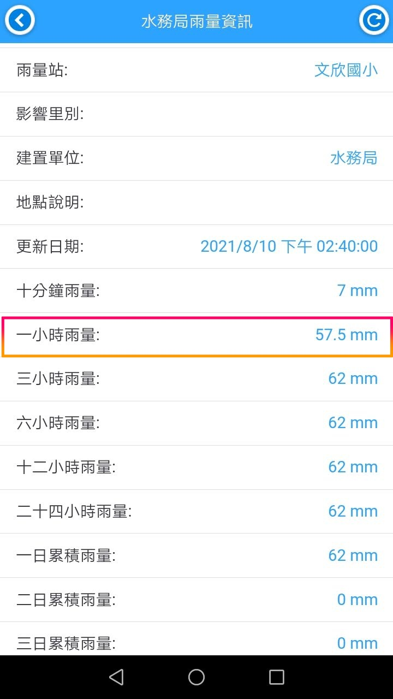
淹水區域觀測
水情看桃園是開發相當好的手機軟件，可以協助民眾於是前預估雨量與淹水風險。預先避開將車停在有淹水疑慮的區域, 或駛入淹水區。當遇到淹水的區域可即時拍照通報作為政府掌握資訊的有利幫助。
龜山區路面淹水監測站, A7/A8 生活圈相關測試點包含：
- 11. 龜山區文明路, 文化一路口
- 12. 機捷A8站
- 14. 文化一路55號 (桃園酒廠)
- 21. 文化二路與文二一街
- 22. 文化二路21號
- 23. 文化二路138號
- 31. 龜山區頂湖街16號
- 32. 龜山區頂湖五街16號
- 33. 山鶯路興業路口
- 34. 南上路350巷-1, -2
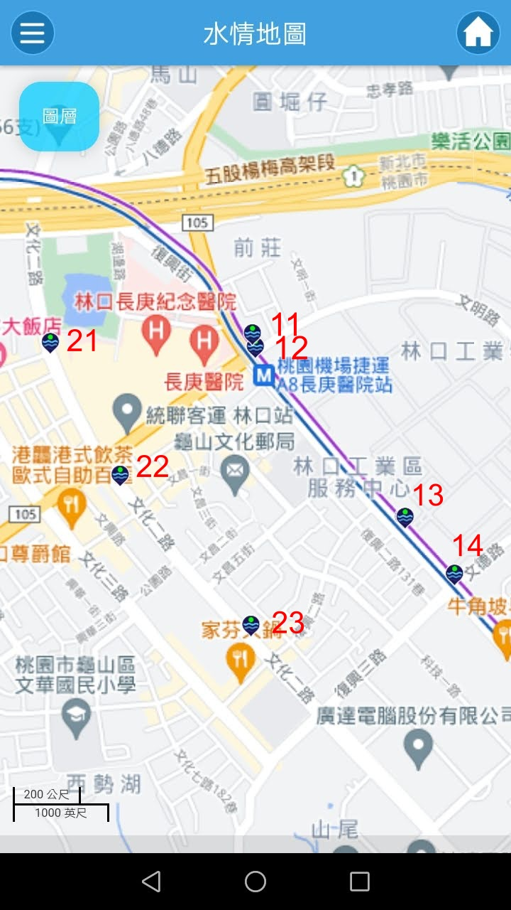
使用 水情看桃園APP 查詢淹水區域
2021/08/10日: 當雨量在 57.5 mm/hr 時, A8 淹水觀測點測得的 淹水高度達到 42 cm 深的積水。在7/30日 A8 大淹水時 水務局稱兩週內 就能解決？ 具兩週期限 也只剩4天, 對瞬間大雨 A8 區域似乎仍不具有效排水能力？
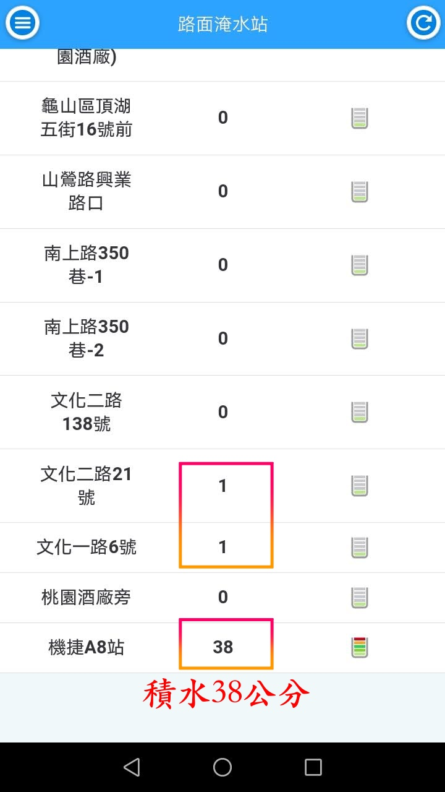
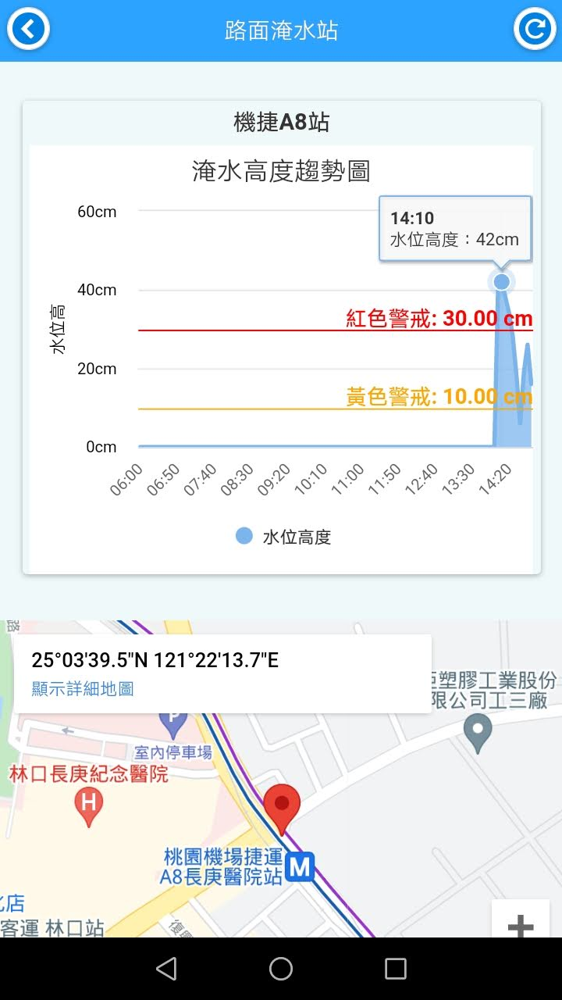
災情通報 - 淹水即時通報
淹水時，請儘速使用手機 水情看桃園APP 向政府災情中心通報。並建議上傳至 相關網路社群。
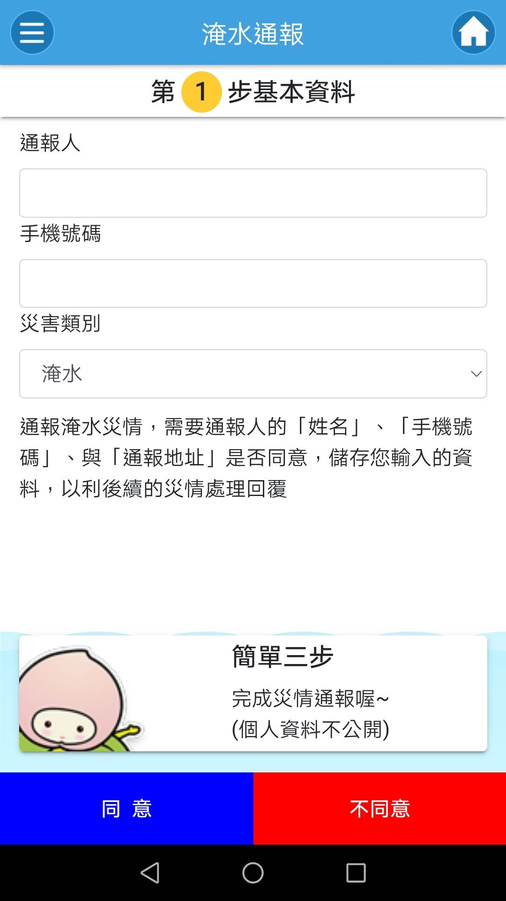
2021/08/10 14:00 龜山區大湖路463巷 積水情形
A8淹水紀錄
－ 在此將紀錄A8站的淹水, 檢討A8區域排水工程是否改善？淹水紀錄 - 2019/05/17
淹水相關報導- 自由時報 2019/05/20 機捷A8站周邊路段淹水
- 三立新聞網 2019/05/17 桃園暴雨／林口機捷A8站周邊道路積水
- 台灣導報 2019/11/04 林俐玲關切公6滯洪池排放問題
水務局：2019/05/29的回應
聯合報 2019/05/29 水務局長劉振宇指出： 2019/05/17日的局部大雨造成龜山地區多處淹水，當時已派員前往現地會勘，A8站周遭主要有側溝排水負荷量不足、路面不平整等問題，目前研擬在側溝與雨水排水道間加設連通管，將雨水導入排水道，由於該區為龜山工業區管轄， 將發函與工業區等相關單位會勘評估，確定後最快2周可完成連通管建置 。2019/05/29 的A8 淹水, 水務局實際處理措施是什麼？ 是否有里長/議員的 事後改善驗收/追蹤？
淹水紀錄 - 2021/07/30
日期：2021/07/30日 13:00 - 14:00 淹水相關報導- 中央通訊社 2021/07/30 龜山林口長庚醫院附近多處淹水
- Youtube 2021/07/30 桃園龜山區水淹「一個輪胎高」
- 華視新聞 2021/07/30 龜山最大時雨量82.55毫米
- 蘋果新聞網 2021/07/30 桃園龜山淹水了
- 聯合新聞網 2021/07/31 一場大雨讓林口台地成汪洋 鄭文燦下令專案速處理
- 自由時報 2021/07/30 桃園水務局回應 午後大雨 桃園機捷A8站旁道路淹水
- 聯合報 2019/05/29 桃園龜山大雨1個月淹4次 排水有問題
0730 淹水紀錄
- 時間：2021/07/30 13:30 起降雨約 2小時
- 雨量：每小時 83.5mm
- 積水地區：龜山區 共9處主要淹水地點, 包含機場捷運 A8站周邊, 桃園酒廠周邊, 文明路、文化三路、文昌五街、樹人路、復興二路等
- A8站：淹水深度達 40公分, 小客車輪胎高度
- 責任歸屬：樂善里
A7淹水檢討
聯合新聞網 2021/08/07:紓解機捷A8淹水 將先打通排水箱涵- 林口雖然是台地，但地勢還是會有高低落差，機捷A8站剛好位於文化一路一帶的最低點，容易匯集雨水。
- A8站附近雨水下水道系統的時雨量容受度僅40.53毫米/小時。此為民國69年, 40年以前規劃採用的3年重現期保護標準, 無法應付現在環境和防災需求。
- 改善措施：市府將短期計畫優先打通文化一路到文明路的排水箱涵，也擬定文化一路側溝改向、文明路和復興一路排水箱涵擴建等中長期目標。
- 改善計畫：文化一路側溝改向計畫往北延伸約500公尺，與台灣菸酒公司林口酒廠附近新設的排水箱涵銜接，將雨水分流到其它地方，已經著手設計。另文明路和復興一路的排水箱涵擴建計畫目標銜接滯洪池，但總經費約3.5億元，將積極向營建署爭取 。
鄭文燦市長 2021/07/31 下令專案速處理
鄭文燦7/31日在防疫會議特別提出龜山淹水一事，並指示水務局專案處理，盡快打通文化一路到文明路的排水系統，若缺經費，也可動用災害預備金，「務必在最快的時間內完成」。另外，他也指示環保局加強淹水後的環境復原工作。水務局的承諾
2021/7/31 自由時報：市府水務局主任秘書魏茂銹表示，當地原側溝通水不足，正進行擴充銜接雨水下水道工程，預計2週內(2021/8/14日)完工啟用改善窘況 。當天雨量紀錄：龜山 2021/07/30 13:00-14:00 小時雨量 50.5 mm, 次於八德 59.0 mm, 當日24小時累積雨量 69.5mm
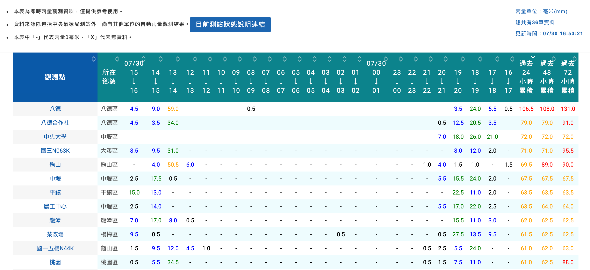
依據 氣象統計 2020年 最大日降水量 3月 87.5mm, 5月88.0mm, 7月 95.0mm, 8月 150.5 mm , 9月 54.5mm。牛煦庭議員 在當日雨後發文 A8站區域排水系統只能有每小時 50mm 的乘載量，而這次一小時降水也就是50.5mm, 多了0.5mm 就讓A8積水超過40公分？ 議員們應該先調閱今年度雨水下水道是否有清淤。否則就不要說有50mm防洪標準, 或去接受水務局最大瞬間降雨量的說法。 一年內超過此標準的日子是有很多讓A8 大淹水的機會。
2021/07/30 淹水紀錄照片
龜山很少有能上新聞的機會, 讓我們留下這一個視頻做紀念。
防汛改善追蹤
水務局的規劃
- 短期規劃：
1. 市府將優先打通文化一路到文明路的排水箱涵。- 已經施工：估計在2021/8月底完工
- 工程名稱：110年桃園市雨水下水道維護工程(開口契約)(南區)
- 契約名稱：契約(107)桃水雨工字第11號
- 標案名稱: 110年桃園市雨水下水道清淤暨巡檢工程(開口契約)(北區)
- 標案編號： 1100120-J2
-
中長期規劃：
- 文化一路側溝改向、文化一路側溝改向計畫往北延伸約500公尺，與台灣菸酒公司林口酒廠附近新設的排水箱涵銜接，將雨水分流到其它地方。
- 文明路和復興一路排水箱涵擴建計畫目標銜接滯洪池
- 總經費約3.5億元，將積極向營建署爭取。
- 需要里長，議員 依據職權持續追蹤，並積極爭取！所有居民應該持續關切！
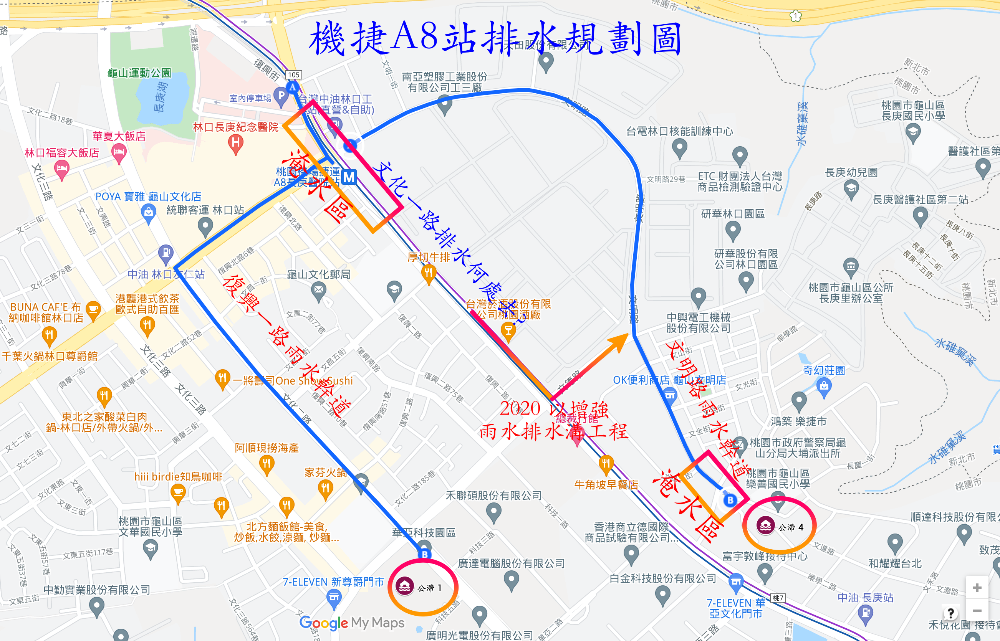
目前下水道施工地點 2021/08/14 下水道施工查詢
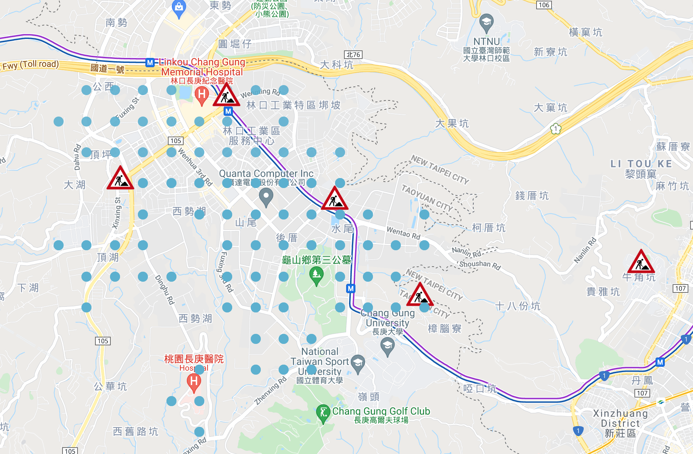
A8站排水 銜接文明路雨水下水道工程施工。是否能幫忙解除A8站淹水問題？有待未來雨來時的實際驗證！ 至於將雨水導入公滯4以後，公滯4 是否能容納？將考驗附近新建社區的防汛功能！
下圖為輪播圖 請點擊左右邊選擇下一張
A7 重劃區市民的期望
- A8 文化一路是進出國道一號的主幹道，以往逢大雨必淹。影響A7重劃區居民生活至鉅。而該區域在台地上, 沒有經常淹水的理由：A8 捷運站 鄰近 復興一路及文明路 兩個雨水幹道的交接處！
- 依據上面自由時報新聞資料 2021/07/31 桃園市水務局主任秘書魏茂銹表示 銜接雨水下水道工程將於兩週內完成啟用。 但在看看 2019/05/29 聯合報新聞：水務局長劉振宇指出, 將發函與工業區等相關單位會勘評估，確定後最快2周可完成連通管建置。 2019年也說是兩週就能完成聯通管建置？ 難免讓人覺得這是標準回應模式，期望居民一個月後都完全遺忘了這不是第一次淹水改善說詞！
-
希望市大家一起參與監督行動，確實掌握市府對此重要議題, 具體實施改善計畫。包含
- 徹底檢討A8淹水問題：原文化一路A8站附近雨水下水道系統設計不良？目前在A8站打通至文明路的涵管外，需要做長期治本的規劃包含整體文化一路雨水下水道需要徹底規劃。 市議員應該建立長期監督機制，隨時公布 改善規劃結果及執行進度說明。
- 在水尾地區（文明路與文德二路交口）淹水後才實施下水道清淤工程？ 其他下水道仍有許多充滿樹葉垃圾，是否有標準的清淤作業流程？ 須讓水務局公布年度 下水道清淤工作執行狀況？是否在必夏季颱風季節前落實年度清淤工作？ 說明相關下水道淤塞智能監控系統建置現況？
- 目前短期改善工程後，須監督A8站文明路下水道打通對A8排水是否改善? 文化一路雨水導入公滯4後，公滯4 容量是否能承受？ 對周邊社區是否會有負面影響？
- 請市議員查明整體A7重劃區的污水及雨水下水道完成比例？尤其是樂善工業園區的排水系統建制狀況說明。 請水務局說明整體A7重劃區的雨水下水道設計保護標準（重現期距或頻率年）。
民意代表的監督
立法委員，市議員,里長 對2021/07/30 A8大淹水的改善會議 展現大團結來關切問題，先給個讚。但居民在等改善具體結果 不只是看各位拍美照或淪為做秀！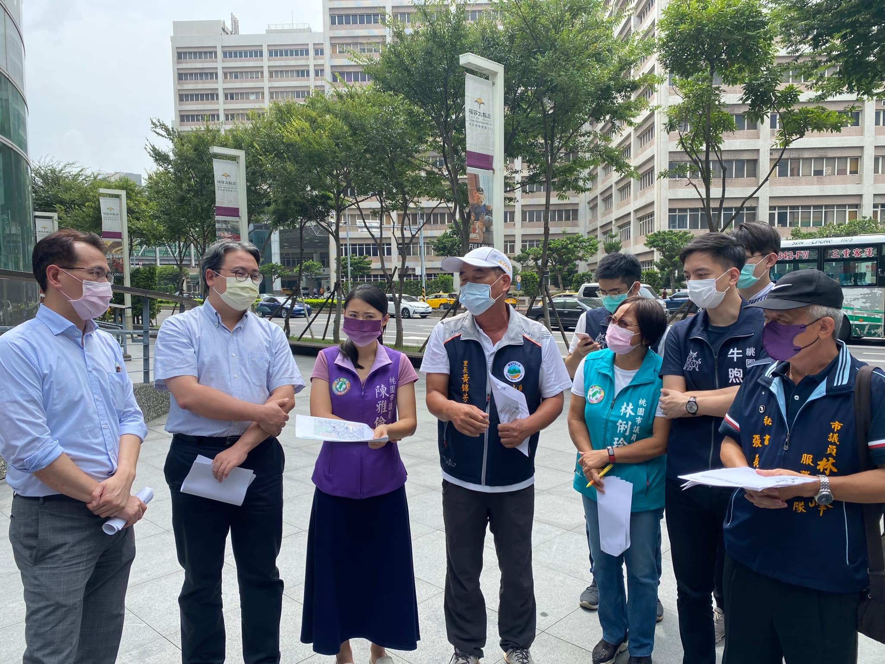
摘錄：陳雅倫議員 2021/08/03日臉書
近年來極端氣候這種致災性豪雨頻繁出現，因此雅倫要求市府相關單位儘快安排會勘，今日也謝謝鄭運鵬委員、黃世杰委員同步召集中央內政部營建署共同來討論長庚周邊淹水問題。過去雅倫有要求水務局與工務局將文化一路上桃園酒廠及長庚醫院的側溝水引流，都已經快完成，因此這次路面收水速度很快，但這次的暴雨，雨水下水道能夠承受的量體已經明顯不足（台北市以外的縣市幾乎都是三年重現期保護標準這個等級），所以特別找來中央內政部希望爭取經費將坪頂地區排水幹線加大，增加防洪保護標準，盡量避免再次淹水。
會中要求水務局在大雨前務必預先抽排調節滯洪池水量（公滯1、公滯4），另外樂善文德二路顯安巖前方最低窪處，要求埋設涵管連接至公滯1納入計劃，而營建署有補助桃園市政府2900萬做區域排水規劃，目前桃園市初步規劃的排水道幹線改善工程要費3.5億，但尚未定案同時仍要爭取中央補助經費來推動，我們會持續追蹤這個案子。
摘錄：牛煦庭議員 2021/08/04日臉書
今天來到上週淹水的真正重災區樂善里，先聽取了水務局針對公滯四滯洪池調度的情況。 接著，到 #文明路樂安街口，根據里長當天的觀察，和水務局的資料對照，這個路口和滯洪池銜接的 #雨水下水道管徑不足 可能是最大問題，積水沒辦法快速進到滯洪池，當然漫出來，整條文明路也就變成河流了。我要求水務局儘速確認相關數據，並評估加大管徑、水路分流、以及針對路口低窪地區設置集水井等設施， 一個月內提出改善計畫。我們會持續追蹤！
落實下水道清淤 的執行/監督
每年在颱風季節到來之前, 雨水下水道清淤是防止淹水的重要工作。 市府公開資訊 104-105, 107年有數據，但110 年只有招標, 尚未有 執行紀錄？
- 桃園市政府水務局工作報告 109年3月27日定期會議報告
- 政府資料開放平臺：桃園市政府雨水下水道巡檢調查及清淤長度統計表 107年, 104-105年
- 桃園市 政府年度各 區 雨水下水道系統 及其他排水維護管理訪評計畫 - 計畫書：需要有執行結果報告？
- 桃園市雨水下水道清淤暨巡檢工程 - 110年 招標書：似乎尚未執行？
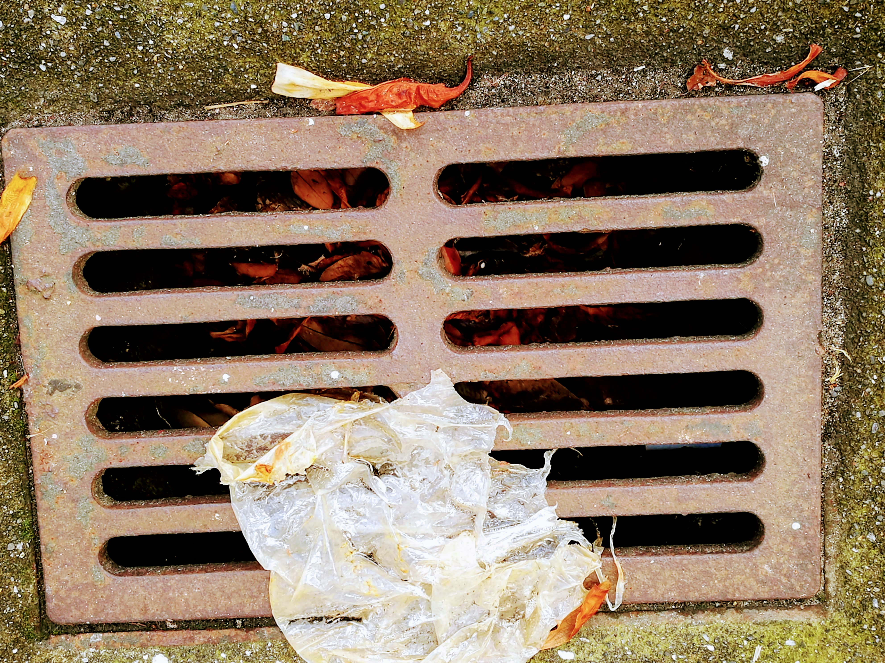
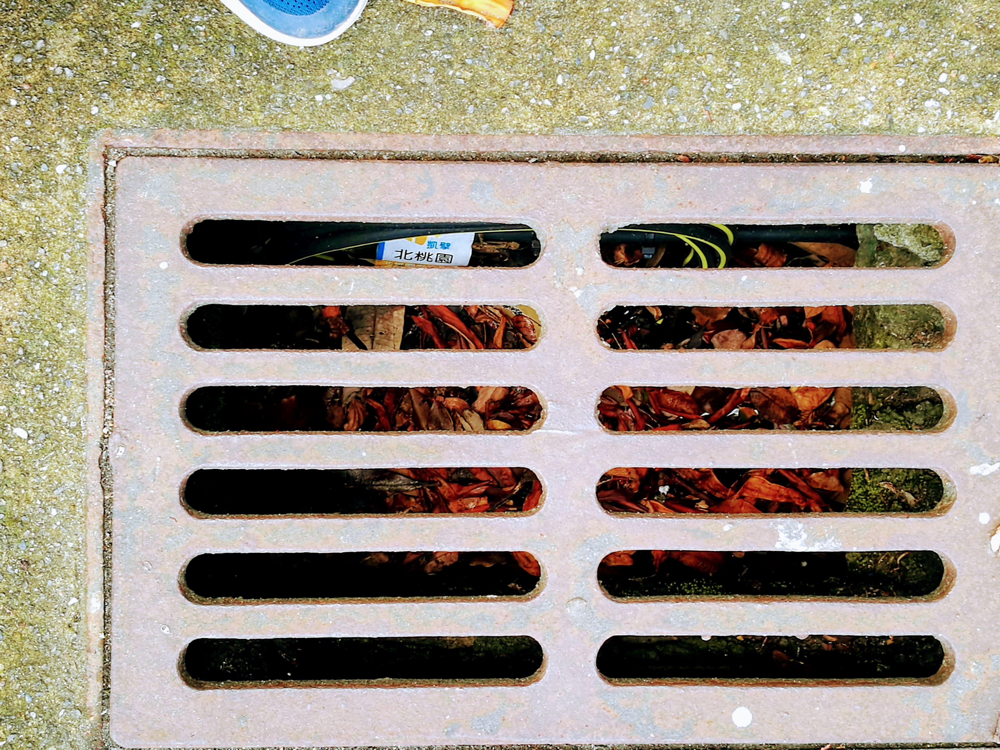
A7污水下水道系統
- 桃園市水務局 A7站地區下水道系統
- 下水道雲端智慧管理系統 管線及用戶查詢
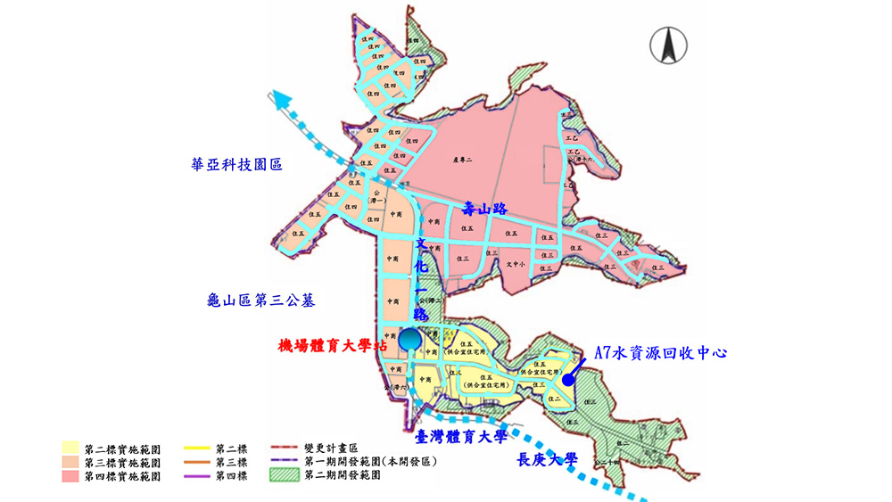
- 桃園機場捷運A7站水資源回收中心：全期可處理水量為12,500CMD，分三期建設，預估第一期建設完成每日可處理4,000CMD。
- 污水下水道管線長度：總計1,932m，本案為區段徵收案件，主幹管及次幹管已完成 。
- 污水用戶接管：本系統用戶接管工程全期總計16,477戶，目前區段徵收地區已約有4,000戶完成設置切換閥與管線連通，待水資中心完成後，即可通水處理。
污水下水道建設評比
在污水下水道接管率上, 新北市居全國之首。桃園市67%與隔壁新北市92%是落後很多！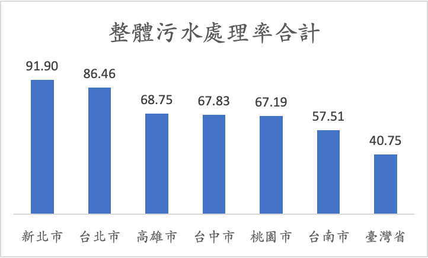
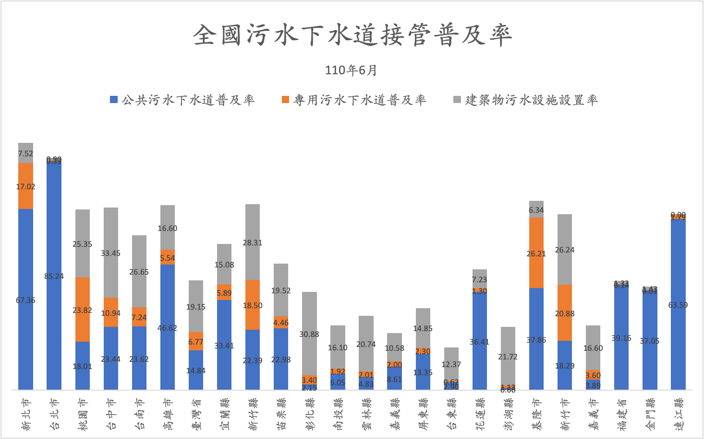
桃園酒廠周邊淹水改善工程 2020/7 - 2021/7
2020年 桃園市水務局推出龜山排水改善工程，首期「長庚醫院」周邊工程已完成，自來水公司配合管線遷移，避免水管橫越道路側溝。第二期的「桃園酒廠周邊」工程，近日動工，希望改善林口一帶淹水問題。桃園酒廠前，由於地勢低窪，以往每逢豪大雨來襲時，雨水宣洩不及，此處猶如汪洋大海般淹水，造成人車交通秩序大亂。 桃園市政府養護工程處受水務局所託，辦理此地易淹水改善工程，但希望做工程不單單只是解決問題點，而是將人本環境、生態保育等一併納入規劃，改善周邊環境，讓點狀工程可以達到全面的效益。
桃園市龜山區文化一路(桃園酒廠前)易淹水改善工程 相關資訊
- 開放標案 2020/05/01: 桃園酒廠易淹水改善工程決標
- 中時新聞網 2020/08/12: 改善龜山林口淹水問題 桃園酒廠周邊改善工程啟動
- 桃園市養護工程處 2021/09/02: 市長視察桃園酒廠淹水改善工程完工
桃園市龜山區文化一路(桃園酒廠前)易淹水改善工程
- 決標日期：2020/05/01
- 得標廠商：忠信營建股份有限公司
- 工程金額：約 3千6百萬元
- 執行期間：2020/07/16 - 2021/07/30
市民的期待
龜山文化一路 排水改善工程，首期長庚醫院的改善工程在2021/07/30 大淹水時完全破功！改善工程完全無效！，對第二期工程 桃園酒廠周邊排水改善工程，在2021/09/02 由市長親自完成驗收, 如下圖。 就請所有居民 下次大雨時來驗證此一工程的成果，讓我們拭目以待！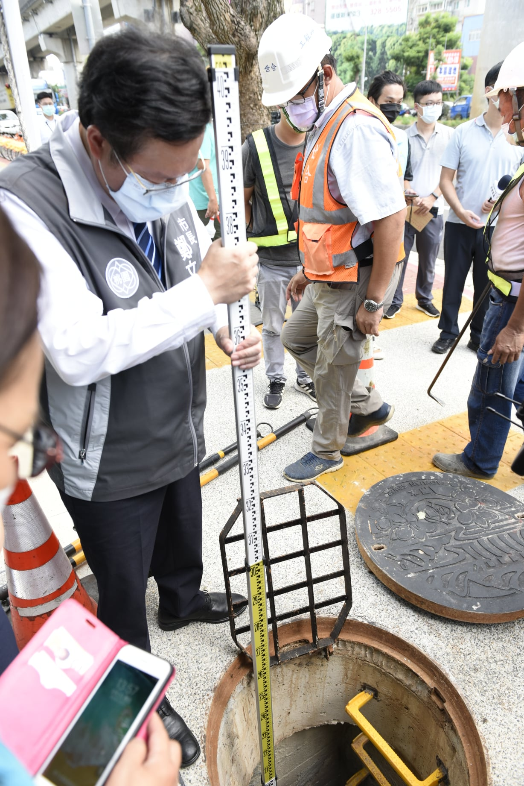
2021/09/02 鄭市長親自驗收 桃園酒廠前的排水改善工程
桃園酒廠易淹水改善工程驗收 2021/09/02
桃園市長鄭文燦於2021/09/02日下午前往龜山區文化一路視察桃園市龜山區文化一路(桃園酒廠前)易淹水改善工程成果。 工程作業內容包含：- 本工程施作雨水下水道採埋設直徑1.2m管涵方式於文化一路酒廠綠地及文德路道路下方，作為分流導水增加排水效益。
- 本工程更配合改善周邊環境，文德路全斷面刨鋪，增加平坦度；文化一路人行道更新，增加行走舒適度；以及將與酒廠所借用用地 重新鋪植草皮，增加美觀性，讓工程不在只是工程，而是整體環境營造。
- 桃園酒廠位於文化一路較低窪地區，往南因文化一路東方地勢更低，因此文化一路路面不易淹水。
- 本次疏通的雨水下水道，將雨水導入文明路通往公滯4的雨水幹道。未來應該注意公滯4是否能容納所有匯集的排水量。
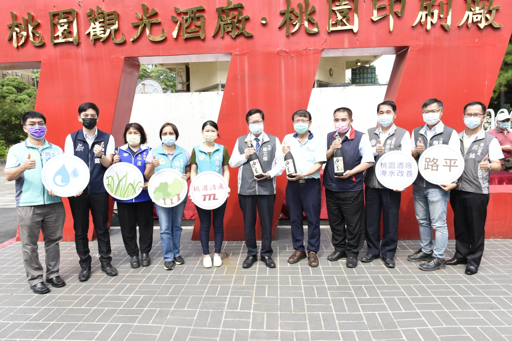
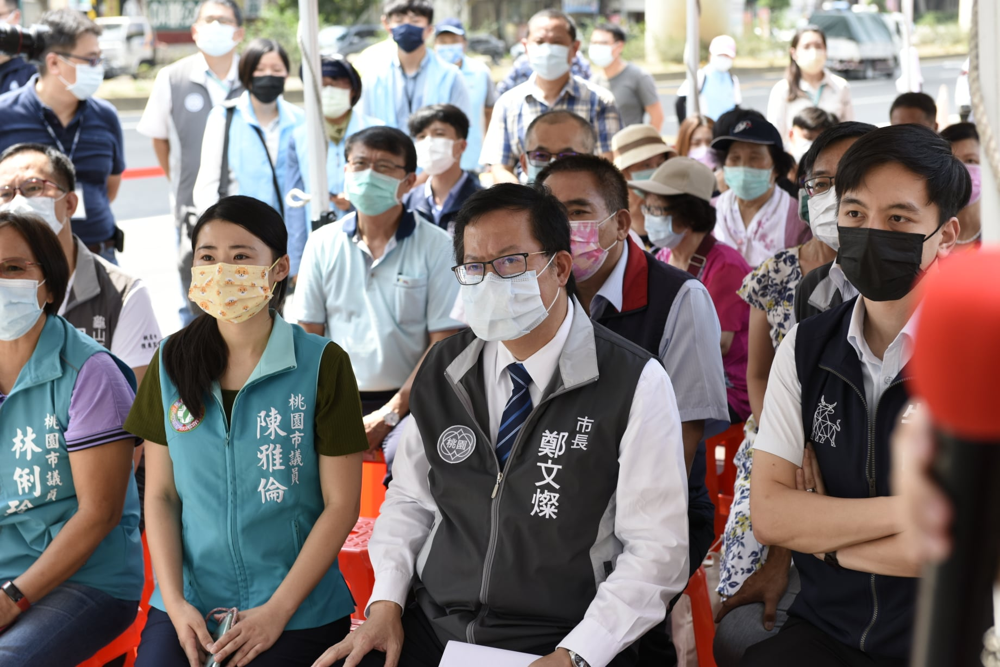
2021/09/02 市長及議員們的工程驗收大合照，市民可是要依據未來排水成效來做2022的投票參考的！